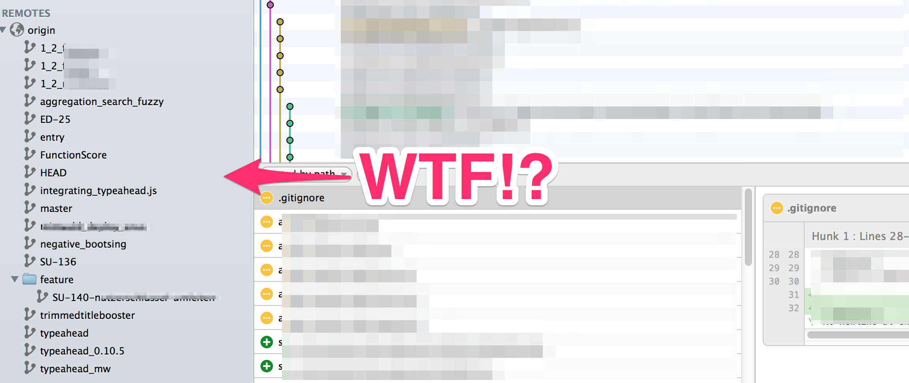
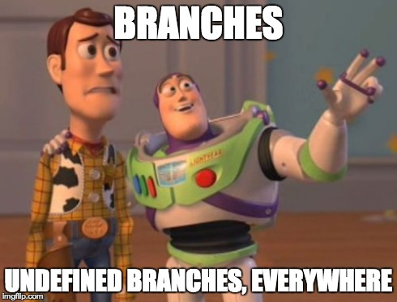

Git Flow
a successful branching strategy
Your flight captain for the next couple of minutes:
Felix Peters
Application Developer
@develop4edu GmbH Stuttgart
Status Quo

Centralized Workflow

Replacement for traditional SVN Worklows
Feature Branch Workflow

All feature development should take place in a dedicated branch instead of the master branch.
Conclusion

By isolating features into separate branches, everybody can work independently, yet it’s still trivial to share changes with other developers when necessary.
Result
Why Git-Flow?
Git-Flow

- Defines a strict branching model designed around the project release
- Provides a robust framework for managing larger projects.
- Assigns very specific roles to different branches and defines how and when they should interact.
How It Works
Gitflow Workflow uses a central repository with historical Branches

Master Branch
The master branch stores the official release history
It's convenient to tag all commits in the master branch with a version number
The Master Branch is the untouchable sanctuary! Do not touch it!!!
Develop Branch
The Develop Branch serves as an integration branch for features
Only simple tasks happen here like fixing a typo etc.
Develop Branch is always stable!
Feature Branches

Feature Branches
Each new feature should reside in its own branch
Feature Branches use develop as their parent branch.
When a feature is complete, it gets merged back into develop.
Features should never interact directly with master!
Release Branches

Release Branches
Fork a release branch off of develop
Creating this branch starts the next release cycle
No new features can be added after this point—only bug fixes!
Once it's ready to ship, the release gets merged into master
Then, it should be merged back into develop
Maintenance Branches

Maintenance Branches
Maintenance or “hotfix” branches are used to quickly patch production releases
Only branch that should fork directly off of master!
As soon as the fix is complete, it should be merged into both master and develop
(or the current release branch)
Hotfix-Branches are tiny Releases and they are tagged with a version number
Naming conventions
master
develop
feature/SU-140-nutzerschlussel-umleiten
release/1.2.1
hotfix/(SU-140-)dont-panik
Tools
gitflow - base tool for Git Flow Workflow
https://github.com/nvie/gitflowgit-up - Update all your branches in one step
https://github.com/aanand/git-upJIRA - Supports Feature Branches with Stash
Pitfalls

Continuous Integration
Everyone commits to the mainline everyday
Undo a finished feature
Let's say you add a new feature supercool-feature which you finish (merge into development and delete the feature branch) and then it goes into a release. But then your users really dislike this supercool-feature. How can I undo/rewind/reverse this feature which has been already merged into development and a release?
Solution
When you did git merge supercool-feature Git created a "merge commit" M for you. Get the Hash of this Commit and do
git revert -m 1 commit_hash
Get Code from another Feature- or the Develop-Branch
I need this fancy stuff my collegue made yesterday!
Solution
If his feature is allready finished just rebase on to development.
If it's not finished yet, do a Cherrypick
https://ariejan.net/2010/06/10/cherry-picking-specific-commits-from-another-branch/
Links & Credits
https://www.atlassian.com/git/tutorials/comparing-workflows/gitflow-workflow
https://github.com/nvie/gitflow
http://nvie.com/posts/a-successful-git-branching-model/
http://jeffkreeftmeijer.com/2010/why-arent-you-using-git-flow/